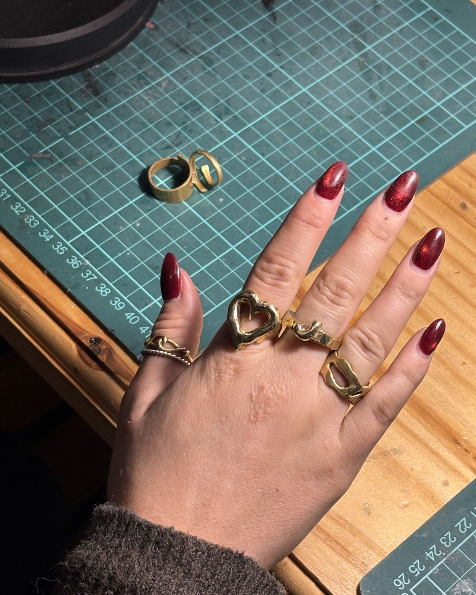
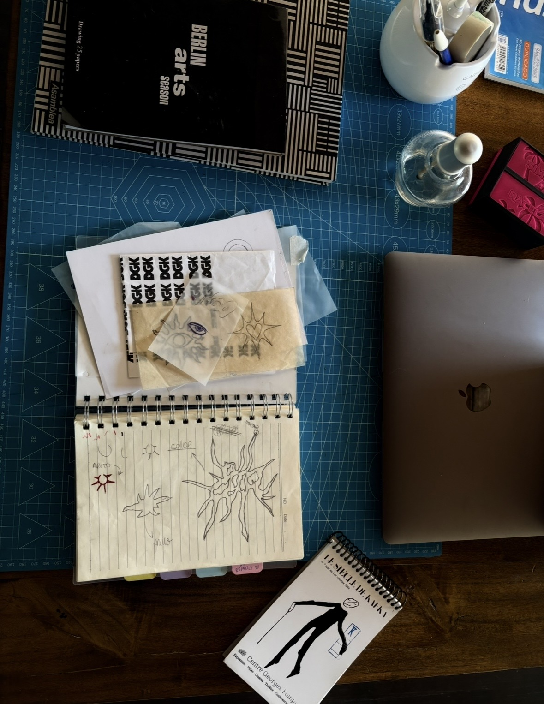
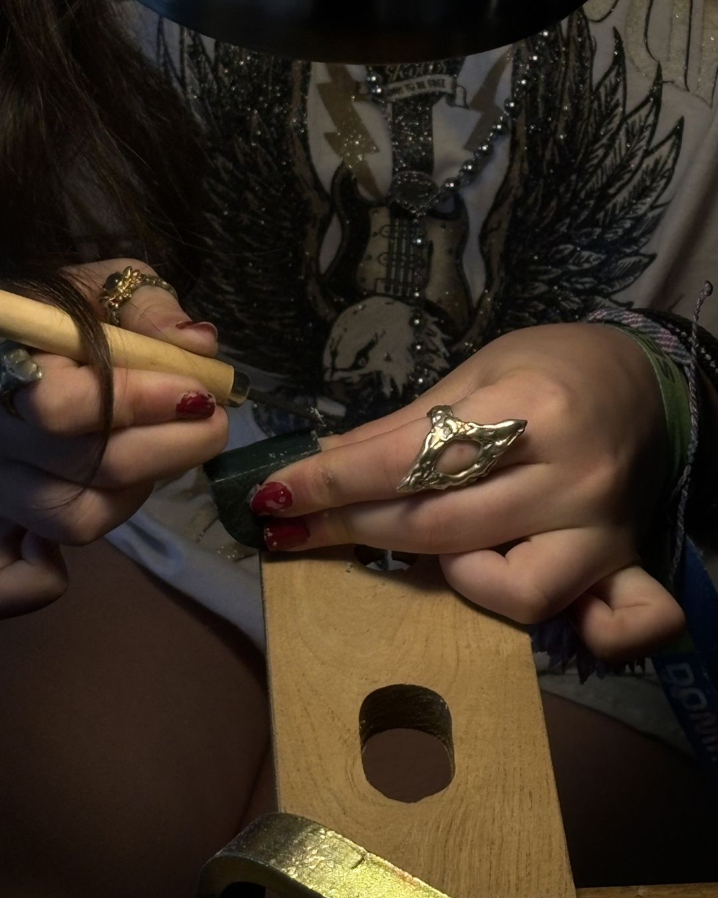

BUNKER
DE JOYAS
TALLER DE JOYERÍA // CLASES // OBJETOS ÚNICOS // ENCUENTROS
SCROLL
TALLER DE JOYERÍA // CLASES // OBJETOS ÚNICOS // ENCUENTROS








Un encuentro exclusivo para compartir y crear. Diseñamos una noche a la medida de tu grupo. Un espacio íntimo a la luz de las velas, rodeados de vino, vermut y tapeo artesanal, pensado para celebrar y experimentar.
Durante el encuentro, cada uno va a modelar su propia pieza en cera guiado por la técnica de cera perdida. Del resto nos encargamos nosotros: fundimos, terminamos y pulimos cada joya para entregárselas listas.
Tu primer acercamiento al mundo de la joyería artesanal. Aprendé a modelar tu primera pieza en cera y dejala en nuestras manos para la fundición. El workshop incluye un segundo encuentro a coordinar con cada participante para pulir y terminar las piezas.
APRENDÉ EL OFICIO A TU RITMO
Clases semanales en el taller, en grupos reducidos y con acompañamiento personalizado. Vas a aprender modelado en cera, el trabajo post fundición y terminaciones, avanzando pieza a pieza según tu propio proceso creativo.

Bunker comenzó con la enseñanza de joyería y el trabajo en cera perdida, pero desde el principio fue pensado como un lugar abierto a la curiosidad, el oficio y la exploración creativa.
Creemos que aprender una técnica es apenas el comienzo. Lo importante es desarrollar una mirada propia, equivocarse, probar, hacer preguntas y encontrar una forma personal de crear.
Hoy Bunker es un taller de joyería. Mañana puede ser también el lugar donde sucedan otros encuentros: escritura, dibujo, pintura, conversaciones, workshops y proyectos que compartan la misma sensibilidad por el hacer.
Más que enseñar una disciplina, buscamos construir un espacio donde las ideas puedan convertirse en objetos, imágenes, palabras o experiencias.


¿Tenés una propuesta creativa que encaja con el espíritu de Bunker? Buscamos colaboradores para talleres, workshops y proyectos que amplíen lo que puede pasar dentro de este espacio. Contanos tu idea.